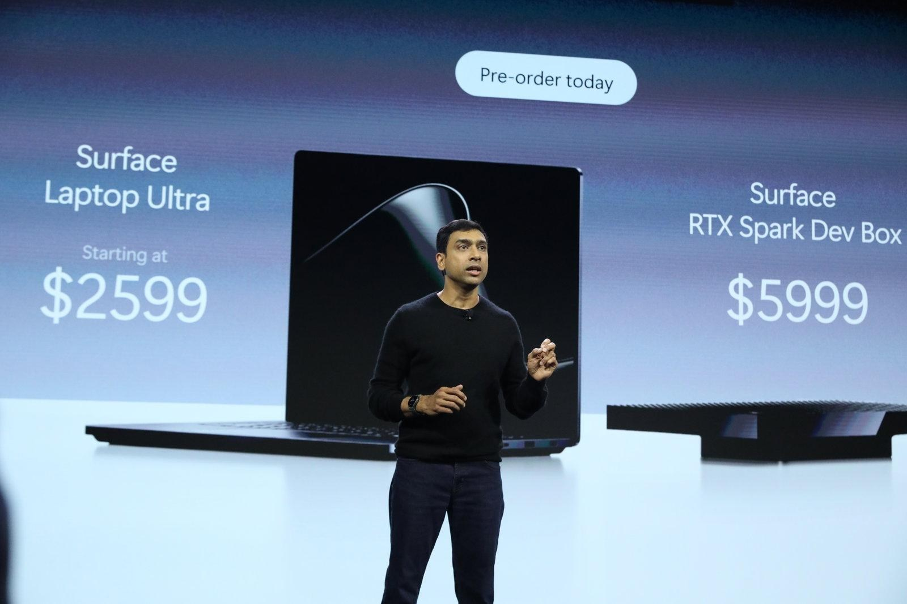

Surface Laptop Ultra — первая машина Microsoft на новом arm-процессоре Nvidia RTX Spark с объединённой памятью до 128 ГБ. Базовая конфигурация: 24 ГБ ОЗУ, 512 ГБ накопителя, 15-дюймовый HDR-сенсорный экран с пиковой яркостью до 2000 нит и тактильный тачпад. Стартовая цена — $2 599, предзаказы уже открыты, отгрузки начнутся 16 октября. От проприетарного разъёма Surface Connect компания фактически уходит: магнитная зарядка теперь цепляется к обычному USB-C и называется Magnetic Connect.
Главное в презентации — не «железо», а переосмысление Windows. Вице-президент Microsoft по Copilot Джейкоб Андреу показал, как агент Autopilot с технологией «гибридного интеллекта» работает с локальными файлами компьютера: по просьбе найти документы для бухгалтера агент сам прошёлся по папкам, переименовал файлы, упаковал их в архив и подготовил письмо с вложением. Локальные модели отвечают за быстрые и приватные операции, облачные — за сложное рассуждение. Обещают и новый поиск: быстрые действия прямо из строки поиска.
Второй новинкой стал мини-ПК Surface RTX Spark Dev Box — предзаказ за $5 999, отгрузки в ноябре. Корпус из анодированного алюминия, напечатанный на 3D-принтере, работает как радиатор, а конфигурация с 128 ГБ памяти и тензорными ядрами Nvidia рассчитана на запуск локальных моделей «свыше 120 млрд параметров»: тестирование ИИ, прототипы агентов и инструменты программирования без облака.
В Microsoft и Nvidia позиционируют новые устройства как инструменты для создателей контента, игр и локальных нейросетей — конкуренция с высококлассными MacBook Pro и растущим рынком агентного ИИ. Windows впервые так отчётливо строится вокруг идеи «ИИ, который делает, а не отвечает», и первые ноутбуки с этой философией приедут к покупателям уже на следующей неделе.